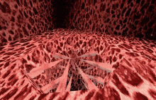
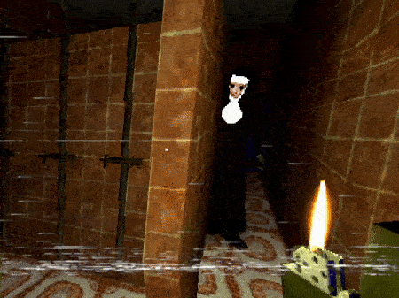
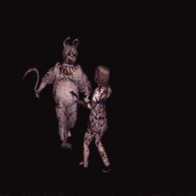
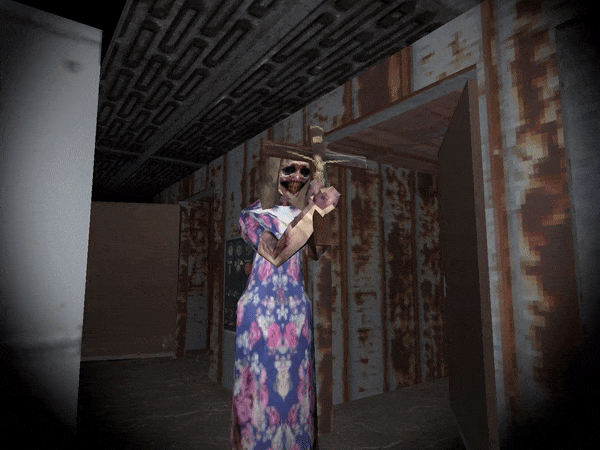
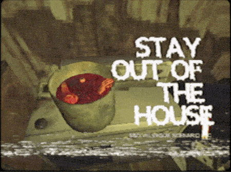
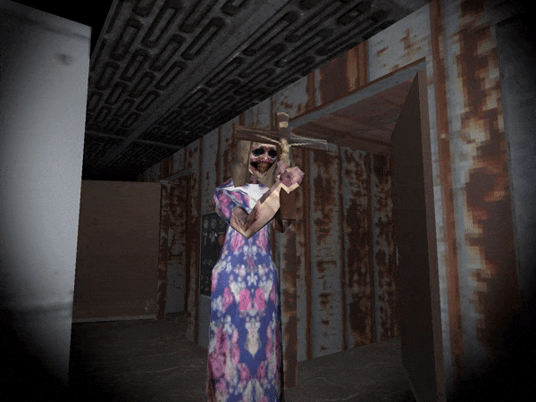
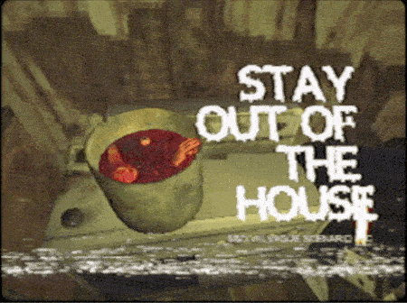

Not to be exaggerative but Puppet Combo has single handedly revived the retro horror style with the many well recieved games the dev team has released throughout these past couple of years. The most notable out of the games are "Nun Massacre", "Babysitter Bloodbath" and "Night Shift". These games are distinctly retro inspired by low budget 70s/80s slasher films as seen with the gore accompanied by the classic PS1/2 visuals. They have a lot of games, which is why I put more imagery in this page in particular. If you want to ride the nostalgia train through tropey horror with strong visuals, Puppet Combo games are just right for you!
   


